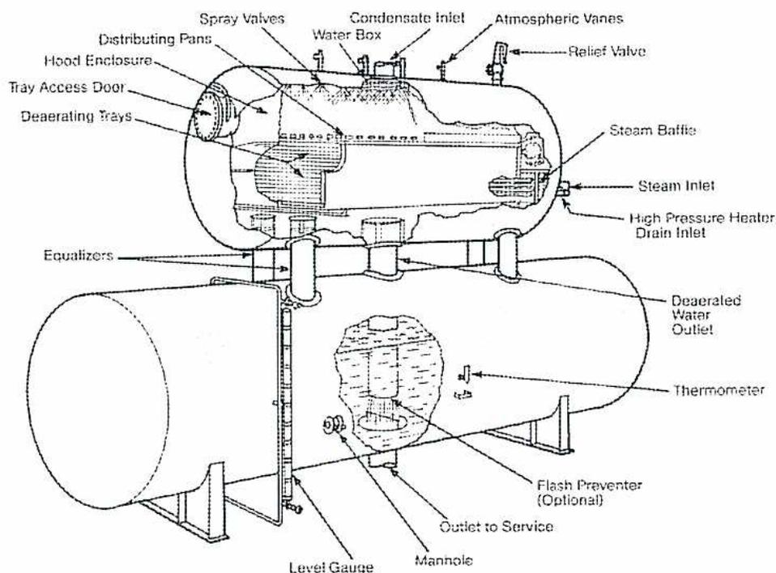
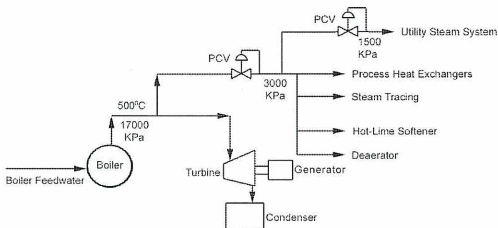
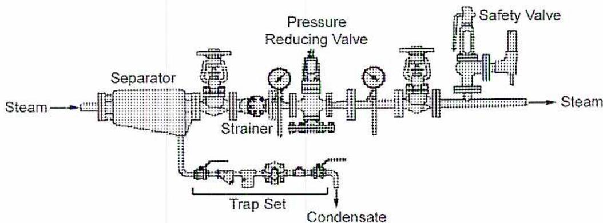
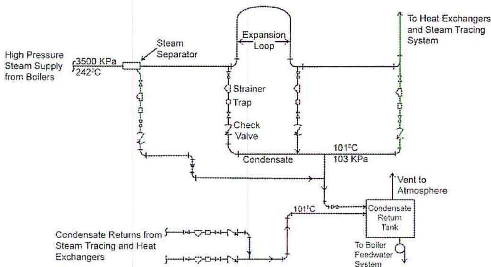
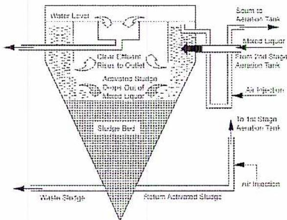
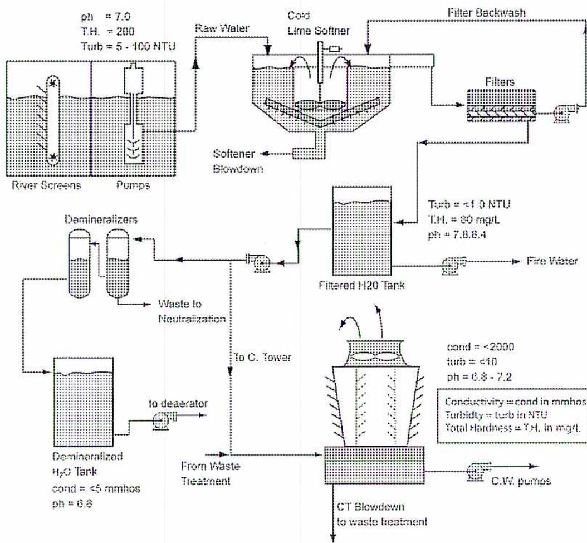

Power Plant Water and Steam Systems
2
Learning Outcome
When you complete this learning material, you will be able to:
Describe the design and operation of power plant systems.
Learning Objectives
You will specifically be able to complete the following tasks:
- 1. Describe, using a sketch, the design and operation of feedwater systems.
- 2. Describe, using a sketch, the design and operation of steam distribution systems.
- 3. Describe, using a sketch, the design and operation of condensate systems.
- 4. Describe, using a sketch, the design and operation of cooling water systems.
- 5. Describe, using a sketch, the design and operation of waste handling systems.
- 6. Explain how different power plant water systems interconnect and what parameters are significant to each.
Objective 1
Describe, using a sketch, the design and operation of feedwater systems.
FEEDWATER SYSTEMS
Boiler feedwater systems include the equipment between the surface condenser and the economizer of the boiler. The water is steam condensate or water that has been purified in the makeup water treatment process. It is high purity water. The feedwater is preheated in the boiler feedwater system to increase the overall efficiency of the plant cycle. The feedwater temperature reaching the steam drum will be as close as possible to the steam systems saturated steam temperature. Modern designs scavenge as much heat as possible using bleed steam or excess process steam to heat the water. The economizer in the boiler is sized to increase the water close to steam drum temperature.
Utility Plant Feedwater Systems
Power plants incorporate low pressure feedwater heaters and high pressure feedwater heaters. The low pressure heaters are located between the extractions pumps and the deaerating heater. The high pressure heaters are downstream of the boiler feedwater pumps and the boiler economizer. A cycle with high pressure and low pressure feedwater heating is shown in Fig. 1. It has six stage of feedwater heating. Four stages are low pressure heating (the deaerating heater is a low pressure heater) and two stages are high pressure heating.
![Schematic diagram of a Power Plant Cycle with Condensate Polishing. The diagram shows the flow of water and steam. Water enters the Boiler Feed Pump, then passes through two high-pressure heaters (circles with zigzag lines), then through a Deaerator (vertical tank). From the Deaerator, the water passes through three low-pressure heaters (circles with zigzag lines), then through a Polisher (rectangular box), and finally enters the Boiler. The Boiler has an Economizer section. Steam exits the Boiler and enters the Turbine. Condensate from the Turbine flows through a series of extraction points (indicated by dashed lines) to the low-pressure heaters, then to the Deaerator. Heater drips cascade downward from the low-pressure heaters to the Deaerator. The Boiler Feed Pump is connected to the Deaerator via a dashed line labeled 'Heater Drips Cascade Downward'.](2df09d249c38abee55dbf0526dd6da0a_img.jpg)
Figure 1
Power Plant Cycle with Condensate Polishing
The system shown in Fig. 1 is a utility plant cycle that has condensate polishing. Steam to supply the different levels of feedwater heating is bled off the turbine at the required pressures. The drains from the shell sides of the heater are cascaded down to the next lowest pressure of heater. The HP heaters drain to the deaerator and the low pressure heaters return condensate to the surface condenser hotwell.
![Figure 2: Power Plant Cycle with Steam Supplies and Condensate Drains. This schematic diagram illustrates a power plant cycle with a boiler, a high-pressure (HP) turbine, a reheater, a low-pressure (LP) turbine, a condenser, a deaerator, and various feedwater heaters. The boiler includes an economizer, boiler, reheater, and superheater. The HP turbine has four extraction points for steam. The LP turbine also has four extraction points. The extracted steam is directed to four high-pressure bleed heaters and four low-pressure bleed heaters. The drains from these heaters are cascaded: the LP heaters drain to the condenser hotwell, and the HP heaters drain to the deaerator. The deaerator has an exhaust connection to a feedwater drive turbine. The feedwater pump is located after the deaerator, and the condensate return line is shown entering the condenser hotwell.](2fa4a1bf91d0f34e87c689fbc1211fe3_img.jpg)
Figure 2
Power Plant Cycle with Steam Supplies and Condensate Drains
The power plant cycle in Fig. 2 has eight stages of feedwater heating. There are four stages of low pressure heater heaters and four high pressure heaters. Steam for the low pressure feedwater heaters is bled off the LP turbine. Bleed steam for the deaerator is supplied from the boiler feed water turbine exhaust. Bleed steam for the high pressure heaters is supplied from the HP turbine and IP turbine.
Closed Feedwater Heaters
The feed water heater shown in Fig.3 is a low-pressure heater from a power plant cycle. It is the first heater downstream of the hot well pumps. The exchanger is a U-tube design with the water on the tube side and low-pressure steam on the shell side. Steam, which is bled off the L.P. turbine, condenses in the shell side and heats the feed water passing through the tubes. The shell side of the exchanger has a vent line connected to the surface condenser. Any non- condensable vapors that build up in the shell side are discharged through the vent.
The condensate exits the shell side of the exchanger and is piped back to the surface condenser. It flows through a seal leg and a flash box before entering the hot well. The seal leg is designed to operate with a water level of sufficient height to stop any steam from passing directly into the flash box. Because the condensate from the heater is at a
higher temperature than the hot well, some of the condensate vaporizes before it enters the hot well. The flashing occurs in the flash box. The flash steam enters the surface condenser to be condensed and the liquid drains to the hot well via a seal leg.
![Schematic diagram of an LP Feedwater Heater Installation. The diagram shows a vertical shell-and-tube heat exchanger. On the tube side, BFW (Boiler Feed Water) enters through an 'INLET VALVE' (M.O.V) and exits through an 'OUTLET VALVE' (M.O.V). A 'BYPASS VALVE' (M.O.V) is connected across the top of the shell. 'BLEED STEAM FROM TURBINE' enters the shell side. A 'TO VENT CONDENSER' line is also on the shell. A 'FLOAT CONTROLLED TRIP GEAR' is mounted on the lower shell. A 'LIQUID SEAL LEG' connects the bottom of the shell to a 'FLASH BOX'. From the flash box, 'FLASH STEAM' goes to a 'SURFACE CONDENSER' and liquid drains to a 'HOT WELL' through another seal leg. A legend box states 'M.O.V = MOTOR OPERATED VALVE'.](690fce4fb5c9cbb8beb560cb2a3fcbeb_img.jpg)
Figure 3
LP Feedwater Heater Installation
The shell side of the heater is equipped with a float operated trip gear. If the condensate level becomes high enough to lift the float, the heater trips off-line. When this happens, the motor operated inlet and outlet valves close, while the motor operated bypass valve opens. The bypassing arrangement protects the shell side of the exchanger from being over pressured by water from the tube side in the event of a tube leak. A tube leak results in high-pressure water entering the shell side of the heater. The condensate level soon reaches the float operated trip gear, causing the heater to trip off-line. The high-pressure heaters are often arranged in pairs. A high level in one heater causes both heaters to trip off line.
A horizontal high pressure feedwater heater is shown in Fig. 4. High pressure heaters are downstream of the boiler feedwater pumps and must withstand feedpump discharge pressure on the tube side. This pressure ranges from 10.4 MPa to 35 MPa in fossil fuel plants. Most feedwater heaters are the U-tube design with the tubes expanded or welded into the tubesheet. They are often two-pass designs. Four pass designs are more costly to manufacture as the shell is larger in diameter.
Closed feedwater heaters can be divided into one, two, or three zones, depending upon the temperature of steam entering the heater. The steam may be slightly superheated or saturated. If it is superheated the heater has a superheated zone and a saturated zone. If it is desired to subcool the condensate (cool it below the saturation temperature of the steam), a subcooling zone is incorporated in the heater. The heater in Fig. 4 has three zones.
![Figure 4: High Pressure Feedwater Heater. A detailed cross-sectional diagram of a horizontal high-pressure feedwater heater. The diagram shows the internal structure including the shell, tubes, and various zones. Labels from left to right include: Pass Plate, Feedwater Outlet, Impingement Plate, Steam Inlet, Desuperheating Zone, Shroud, Shell, Baffles/Supports, Tubes, Drains Inlet, and Head. Labels from right to left include: Impingement Baffle, Orifice (Typ), Subcooling Zone Inlet, Drains Subcooling Zone, Drains Outlet, Feedwater Inlet, and Partition Cover. The heater is divided into three main zones: Desuperheating Zone, Subcooling Zone, and a central zone for condensation.](8e592c58b5074d79831ff650c2c636df_img.jpg)
Figure 4
High Pressure Feedwater Heater
Open Feedwater Heaters
Most fossil fuel and industrial plants have one open feedwater heater (deaerator) in the circuit. It is classified as an open heater because the steam is in direct contact with the water being heated. Deaerators serve two purposes: to heat the feedwater and to deaerate the water or remove gases such as oxygen and carbon dioxide from the water. The storage compartment of the deaerator also serves as a suction tank for the boiler feedwater pump.
The deaerator in Fig. 5 consists of two horizontal pressure vessels. The top vessel is the deaerating heater while the bottom vessel is the storage compartment. The heater section accomplishes the heating and deaeration of the incoming water. Water flows into the inlet water box and then is distributed over the trays by the sprays. The water is broken down into small droplets, by spring loaded spray nozzles. Water cascades down the trays, and coming into intimate contact with steam.
Gas removal from water depends upon three factors: whether the gas ionizes in the water or is dissolved as a free gas, the relative pressures of the gas in the water and in the atmosphere, and the water temperature. Oxygen does not ionize in the water but exists as a free dissolved gas. Carbon dioxide and ammonia do ionize in the water and only a portion of their total content remains in the free form.
Only gases in free form can exert pressure in the water, so only that portion of the gases present in the free form can be removed by mechanical deaeration. Therefore, oxygen can be reduced to very low concentrations in a deaerator, but carbon dioxide and ammonia can be removed only to the extent that they are present in the free form.
The temperature of the water greatly affects the solubility of gases because at the saturation temperature all free gases are theoretically insoluble. Thus raising the water to the boiling point at any specific pressure drives off the gases. During mechanical deaeration, the water temperature is raised to the boiling point, and the dissolved gases, such as oxygen, carbon dioxide and ammonia, are released to the atmosphere. The water is also scrubbed with a flow of steam to sweep away the released gases.
The bulk of the oxygen and gases are removed in the spray section above the trays. Only 5% of the oxygen is removed in the final polishing tray section. This final removal is still important as the oxygen level must be down to 5-7 parts per billion in the deaerator effluent. Higher levels of oxygen result in oxygen pitting corrosion in the downstream equipment. Oxygen pitting in high pressure heaters and in the economizer section of the boiler will eventually lead to leaks. The products of the corrosion are also carried into the boiler and can build up on the heat transfer surfaces. High levels of iron in the boiler water and blowdown are a sign of corrosion in the boiler feedwater system.

The diagram illustrates the internal and external components of a Spray/Tray Deaerating Heater. The main vessel is a horizontal cylindrical tank. On the top, from left to right, are the Hood Enclosure, Tray Access Door, Deaerating Trays, Spray Valves, Distributing Pans, Water Box, Condensate Inlet, Atmospheric Vane, and Relief Valve. The internal structure shows the flow of water and steam. On the right side, the Steam Inlet, Steam Baffle, and High Pressure Heater Drain Inlet are shown. The Deaerated Water Outlet is located at the bottom right. External components include Equalizers, a Thermometer, a Flash Preventer (Optional), an Outlet to Service, a Manhole, and a Level Gauge.
Figure 5
Spray/Tray Deaerating Heater
Deaerator Operation
The steam pressure and water levels in deaerators are controlled automatically. The water level is critical as it is the supply to the boiler feed pumps. There will be only minutes to correct a water supply problem. The temperature in the storage compartment should be within 2 0 C of the steam saturation temperature that the deaerator operates at. If this is the case, the water is being heated and deaerated properly. If the temperature is low, some of the water is not being heated to saturation temperature. More venting, and increased steam supply may be required. The oxygen in the effluent should be checked by lab technicians or by chemical supply consultants regularly. Online dissolved oxygen meters are the best way to observe deaerator performance, especially during plant startups or upset conditions.
Feedwater Heater Operation
Closed feedwater heaters require little attention on a day to day basis. They have steam on one side of the exchanger and high purity boiler feedwater on the other side (normally the tube side). A level controller keeps the condensate at the desired level. The heaters usually are set up to trip off and bypass if the condensate level becomes too high – as in a tube leak. The plant still operates with the heater off-line, but the overall plant cycle efficiency will be less however.
Feedwater heaters may be taken off line and bypassed for maintenance or to generate more power on a short term basis. With the heater offline (usually the last stage of heating) less extraction steam is used, resulting in more steam flowing through the turbine and increasing power output. More fuel will be consumed by the boiler as the feedwater entering the economizer is at a lower temperature. The overall result is a higher power output with lower plant efficiency.
Objective 2
Describe, using a sketch, the design and operation of steam distribution systems.
STEAM DISTRIBUTION SYSTEMS
Fig. 6 shows a system that supplies high pressure superheated steam for a turbine that drives an electrical generator. It also supplies steam for various process heat exchangers and a utility steam system.
Note: The temperatures and pressures shown in Fig. 6 are only one example. Different plant designs have specific temperatures and pressures.

The diagram illustrates a steam distribution system. Boiler Feedwater enters a Boiler, which produces steam at 17000 KPa and 500°C. This steam is split into two main paths. One path goes to a Turbine, which is connected to a Generator. The exhaust from the turbine goes to a Condenser. The other path from the boiler goes through a Pressure Control Valve (PCV) to a distribution header at 3000 KPa. From this header, steam is distributed to several components: a Utility Steam System (via another PCV at 1500 KPa), Process Heat Exchangers, Steam Tracing, Hot-Line Softener, and a Deaerator. The Deaerator also receives return condensate from the Condenser.
Figure 6
Steam Distribution System
The steam is superheated to provide the energy required to drive the steam turbine. Once the steam has passed through the turbine, it is condensed and returned to the deaerator for reuse as feedwater.
A portion of the steam leaving the boiler is used for various process heating exchangers, feedwater heating, steam tracing, hot lime softening, and deaeration.
Superheated high pressure steam is not required for process heating, steam tracing, or hot lime softening. Therefore the pressure is reduced using a pressure reducing station as shown in Fig. 7. The pressure of the steam supplied depends on plant requirements, such as the steam temperatures required for process heating.

Figure 7
Pressure Reducing Station
The steam used for the heat exchangers is condensed as it passes the heat exchanger and returns to the condensate return system by steam traps. The type of trap used depends on the operating conditions of the system. The steam used for heat tracing is also returned to the condensate return system using steam traps.
All of the condensate is gathered in a condensate tank and pumped to the deaerator for reuse as feedwater. A portion of the steam used for process heating is also used for utility steam. Most utility steam systems operate between 600 and 900 Kpa. The pressure is reduced using a pressure reducing station as shown in Fig. 7.
![Figure 8: Steam Cycle with Topping Turbine diagram. A 'Steam Generator' produces steam at 14.38 MPa gauge (159 C) and 177.1 kg/h. This steam enters a 'Steam Turbine'. The turbine produces 'Generator Output (Gross)' and has three extraction points for 'Process Steam': 10.2 kg/h at 4.45 MPa abs (380 C), 10.0 kg/h at 0.95 MPa abs (219 C), and 15.6 kg/h at 0.75 MPa abs (177 C). The exhaust from the turbine (15.6 kg/h at 0.75 MPa abs, 177 C) goes to a 'Deaerator'. The 'Deaerator' also receives 'To Steam Generator Economizer' (285 C) and 'Make Up' (540 kg/h, 21 C). The 'Deaerator' discharges 'Condensate Return' (15.6 kg/h, 71 C) and 'To Deaerator' (15.6 kg/h, 71 C). The 'To Steam Generator Economizer' stream (285 C) is heated by three pumps: 9.3 kg/h (3.10 MPa abs, 351 C), 12.6 kg/h (1.05 MPa abs, 255 C), and 13.4 kg/h (0.93 MPa abs, 204 C). The 'To Deaerator' stream (15.6 kg/h, 71 C) is heated by three pumps: 9.3 kg/h (920 F), 13.5 kg/h (754 F), and 13.4 kg/h (950 F). A legend defines: kg = mass flow, kg/h; h = enthalpy, kJ/kg; C = degrees Celsius.](daa4a6fa7e2ba1954258f86b4928eb32_img.jpg)
Figure 8
Steam Cycle with Topping Turbine
The main disadvantage of a steam letdown station is the loss of energy in the letdown. The pressure is reduced with no work being done. The steam cycle in Fig. 8 is much more efficient and uses a topping turbine instead of a letdown valve. All of the steam produced in the steam generator goes to the topping turbine. The topping turbine drives a generator producing 66.9 megawatts of electricity. All of the steam entering the turbine does useful work, while the pressure is reduced to that required for process uses.
The topping turbine is an extracting type that extracts steam for process needs at various pressures. This turbine produces steam at 4.48 MPa and 0.93 MPa for process uses. Steam at 3.10 MPa, 1.95 MPa, and 0.093MPa is also bled off the turbine for feedwater heating. Return condensate from the process is returned to the deaerator. Makeup water to the deaerator makes up for water and steam losses in the system such as boiler blowdown, steam venting, and steam consumed in the process.
Steam Headers
Steam distribution systems include many meters of piping at numerous operating pressures, especially if the steam is used for process heating as well as power generation. For example, the steam systems in Fig. 8 include:
- • A high pressure header supplying steam to the topping turbine at 14.03 MPa.
- • A medium pressure header supplying process heaters and turbines at 4.48 MPa.
- • A low pressure header supplying process heating needs at 0. 93 MPa
The high pressure steam header operates at 540°C and is constructed of a material such as 2.25% Cr/1% Mo. It has provisions for expansion, and is supported so as not to transmit forces to the steam turbine. Drip legs from the HP header are routed through steam traps to the MP steam header.
The medium pressure steam header often runs the length of a process plant. It supplies process users and smaller steam turbines that drive compressors, fans, and pumps. It has an automatically controlled vent and safety valves sized to handle a plant trip with full flow from the HP system. Steam traps are supplied at low points and at steam users. The traps normally return condensate to a lower pressure steam system where it flashes into LP steam.
The LP steam header supplies steam for process heating such as the deaerator. Steam flows into the LP steam system from the exhaust of MP turbines. Steam is also letdown into the LP header from the MP header for pressure control. Often excess LP steam is vented to atmosphere or the surface condenser. Venting to the condenser is the preferable method, as the steam condensate is recovered. The LP steam system is also an extensive network and is trapped into the condensate return system. The condensate return system usually returns condensate to the deaerator.
Operation
Steam distribution systems require attention from operations personnel, especially during startup and shutdown situations.
Startup
The steam piping needs to be checked before being put into service to insure:
- • Repairs have been completed
- • Insulation has been reinstalled
- • Anchor points and piping supports are in place
- • Safety valves and vents are in a ready to run position
- • Steam trap isolation valves are open – some drains to atmosphere may be opened until they are blowing dry steam
The piping system pressure and temperatures are increased gradually. If possible, a steam user at the end farthest from the boiler can be put online. Steam vents and letdown stations are checked for proper operation. This permits a small steam flow through the steam and condensate systems. The piping is physically checked for signs of leaks, and piping anchors and expansion is checked.
Normal Operation
After the systems are up to normal operating pressures and temperatures, the operations personnel monitor the systems for changes. Leaks or required repairs are documented and work requests issued for the next repair opportunity. Water hammer should not be present during normal operation. If any hammering exists, the cause should be found.
Malfunctioning steam traps can normally be replaced with the system online. If the existing steam traps are not adequate to prevent hammering, more or large traps may be required.
Shutdown
When shutting down systems, the piping systems do not get a lot of special attention. The steam pressure and temperatures in the system are reduced. When the steam system is slightly above atmospheric, any remaining condensate can be drained to atmosphere. At this point there is insufficient pressure to force the condensate through the condensate return system. The system drains and vents are then closed to prevent any air and oxygen from entering the system. Oxygen causes rapid oxidation (rust formation) when allowed to enter the piping system. Sections of the piping can be blocked in or isolated as required for maintenance to work on attached equipment.
Objective 3
Describe, using a sketch, the design and operation of condensate systems.
CONDENSATE SYSTEMS
It is necessary that all steam lines are constantly and adequately drained of all condensate. If this is not done, the condensate is carried along with the steam and may produce water hammer which causes the rupture of the pipes or fittings. In addition to the danger of water hammer, the condensate may be carried along with the steam to the turbine or steam engine with resulting damage to this equipment.
Drainage is necessary even in the case of pipelines carrying superheated steam because condensation forms during the warm-up period. Also, after the line is in service, there is the possibility of water carry-over over from the boiler.
The drainage system also removes air and carbon dioxide from the piping preventing pitting and corrosion from occurring. Drip or drain lines are installed at all points where the condensate may collect such as:
- • Ahead of risers
- • At ends of mains
- • Ahead of expansion joints and bends
- • Ahead of valves and regulators.
If the pipeline does not contain natural drainage points such as those listed above, then drains are provided at intervals of 150 meters. At each drainage point a drip leg is provided. These drip legs are the same diameter as the pipe for piping up to 10 cm diameter. For piping larger than 10 cm, the drip legs are at least 10 cm in diameter. The purpose of the drip leg is to allow the condensate to escape by gravity from the fast moving flow of steam. The drip leg acts as a reservoir for the condensate giving the trap time to remove it.
Fig. 9 shows a typical steam/condensate return system. In this system, the steam supply from the boiler enters a steam separator where entrained moisture is removed. The steam then continues through the header and enters the expansion loop. Due to a change in the steam flow, traps are provided on the inlet and outlet of the expansion loop to remove any condensate. The condensate, including condensate returns from the heat exchangers and steam tracing system, are piped into a condensate return tank. The condensate is then pumped back into the boiler feedwater system (normally the deaerator). An amine is added to the steam leaving the boiler for protection of the steam and condensate return
lines. Filming amines are used only for low pressure systems, where volatile amines are used for higher pressures. Volatile amines carry over with the steam from the boiler and increase the pH of the steam condensate, reducing corrosive tendencies. The temperatures and pressures in Fig. 9 are specific to this system.

The diagram illustrates a steam/condensate return system. High-pressure steam (3500 KPa, 242°C) from boilers enters a steam separator. The separator is connected to an expansion loop and a strainer trap. Condensate (101°C, 103 KPa) is collected from the separator and returned to a condensate return tank. The tank has a vent to the atmosphere and is connected to the boiler feedwater system. Condensate returns from steam tracing and heat exchangers are also shown entering the return tank.
Figure 9
Steam/Condensate Return System
Condensate Polishing
Condensate polishing is used in many industrial and utility power generation steam cycles. An example of a utility plant cycle using condensate polishing is shown in Fig. 10
![Figure 10: Condensate Polishing in Utility Plant Cycle diagram. Saturated Steam from a Boiler (with Blowdown and Economizer) goes to an HP Turbine. Reheat Steam from the Boiler goes to an IP Turbine. The HP Turbine exhaust goes to an IP Turbine. The IP Turbine exhaust goes to an LP Turbine. The LP Turbine exhaust goes to a Condenser (with Cooling Water). The Condenser exhaust goes to a Hotwell. The Hotwell exhaust goes to a Deaerator. The Deaerator exhaust goes to H-P Heaters. The H-P Heaters exhaust goes to the Boiler. The Condenser exhaust also goes to a Condensate Storage tank. The Condensate Storage tank exhaust goes to a Condensate Polisher. The Condensate Polisher exhaust goes to a Make-Up Demineralization Water System. Raw Water is also shown entering the Condensate Storage tank.](a26e142d3df5bef41a84a9dd099d7825_img.jpg)
The diagram shows a utility plant cycle with condensate polishing. Saturated steam from a boiler (with blowdown and economizer) goes to an HP turbine. Reheat steam from the boiler goes to an IP turbine. The HP turbine exhaust goes to an IP turbine. The IP turbine exhaust goes to an LP turbine. The LP turbine exhaust goes to a condenser (with cooling water). The condenser exhaust goes to a hotwell. The hotwell exhaust goes to a deaerator. The deaerator exhaust goes to H-P heaters. The H-P heaters exhaust goes to the boiler. The condenser exhaust also goes to a condensate storage tank. The condensate storage tank exhaust goes to a condensate polisher. The condensate polisher exhaust goes to a make-up demineralization water system. Raw water is also shown entering the condensate storage tank.
Figure 10
Condensate Polishing in Utility Plant Cycle
Fig.10 shows typical steam-condensate loop. The steam from the boiler passes through a series of turbines. The low-pressure steam is then condensed in the surface condenser where steam condensate is recovered in the hotwell and routed to storage tanks. The condensate is recycled to the boiler and converted back into steam. The continuous cycling of the steam and condensate is commonly referred to as the steam-condensate cycle. Recovering and recycling as much of the returned condensate stream as possible is an obvious way to significantly reduce the cost of treating makeup water.
Within this cycle, some water is lost due to leaks and boiler blowdown. A continuous make-up water source is required to maintain the total amount required in the cycle. A local river, lake or well is used as the source for make-up water. In order to maintain a feedwater stream with a low level of dissolved solids the raw water is purified by demineralizers using ion exchange (IX) resins, reverse osmosis (RO) membranes or a combination of these methods. Regardless of the technology, the operation is commonly referred to as the “make-up water demineralizer” system. In most cases, the make-up water enters the cycle at the condenser hotwell or storage tanks.
The boiler make-up water is only one determinant of feedwater purity, the other being the condensate return stream. In fact, condensate purity is of greatest concern in high pressure utility units, where condensate represents the bulk of boiler feedwater, making it a major potential source of contaminant introduction. Purification or “polishing” of the return condensate guarantees a high quality feedwater stream to the boiler.
Ion exchange technology is often used for condensate polishing. Unlike treatment of make-up water, the condensate polishing system must deal principally with impurities that arise inside the steam system itself, rather than those in the raw water analysis. Impurities in condensate originate from a host of sources, such as vacuum-induced leaks in the surface condenser, corrosion of metal surfaces and contamination from system repairs.
Under normal conditions the raw condensate is considered high quality and contains few dissolved contaminants. Corrosion products are picked up as the steam and condensed water pass through piping, heat exchangers and other associated equipment. A more serious threat is leakage of dissolved contaminants occurring when cooling water in the condenser leaks into the condensate. Condensate polishing can clean up these types of contamination, although large leaks will overwhelm the polishers.
Condensate polishers have high flow rates, as the entire flow of condensate from the condenser is polished. Water temperatures are often high and can approach the temperature limits of the ion exchange resins. The original designs for condensate polisher systems incorporated two approaches:
- 1. Deep beds of bead type ion exchange resins
- 2. Powdered ion exchange resin precoating or covering a filter element.
Another approach is the combination of a non-precoat filter system followed by a deep-bed ion exchange resin system.
In all designs the purpose of the condensate polisher is twofold:
- • Removal of suspended solids by filtration
- • Removal of dissolved solids by ion exchange.
For deep-bed systems the removal of suspended corrosion products occurs by in-depth filtration. This means the suspended particulates penetrate deep into the bed of the ion exchange beads instead of accumulating on the surface of the bed. The filtration capacity of a deep bed is increased via this mechanism. High flow rates and proper bead size are critical to obtain in-depth filtration. Normally the mixed bed consists of cation resin initially in the hydrogen form and anion resin in the hydroxide form. In some cases, the cation resin is used in an amine form after an initial period in the hydrogen form. This extends the service cycle run length and reduces the costs associated with regeneration.
Powdered resin precoat systems offer good filtration but are limited in their demineralization capacity since the resins volume are restricted by the available precoat depth on the filter medium.
Types of Condensate Polishing
The type of condensate polishing depends on the steam pressure of the steam cycle.
Low Pressure: At steam pressures below 4000 kPa, condensate polishing is normally not required. In these systems, boiler feedwater is treated to prevent hard scale formation and corrosion in the boiler. Chemical addition, such as phosphate addition, is used. Boiler water salts are kept from the steam cycle by control of the entrainment carryover and by boiler blowdown.
Medium Pressure: For boiler pressures of 4000 to 16,500 kPa, control of silica, control of corrosion, and removal of particulate matter are required. Control of silica is necessary to prevent silica from volatilizing with the steam and depositing on the turbine blades. Makeup feedwater demineralization with an anion bed controls silica levels in the water if it cannot be controlled with boiler blowdown.
Depending on the feedwater composition and concentration, chemicals may be added to the boiler water to control corrosion. Phosphates are typically used, but all volatile treatment (AVT) may also be used. AVT uses ammonia or other volatile amines to adjust water pH and control corrosion. Condensate “scavenging” is often used to remove corrosion products from condensate returning from the turbine. Condensate scavenging uses a cation resin deep bed operated in the sodium or amine form to filter the particulate matter. This method also removes hardness ions.
High Pressure: for pressures above 17,000 kPa, water chemistry becomes “zero solids chemistry”. Demineralization of make-up water is mandatory to purify water of contaminant ions, such as sodium and silica. Chemical treatment of the boiler or steam generator system are all volatile (AVT) using ammonia or amines such as morpholine or monoethanolamine to elevate pH and control corrosion in the high temperature and wet-steam areas of the steam-condensate loop. The optimum pH range depends on the
materials of construction; at least a pH of 9.3 for all-ferrous systems and a pH of 8.8-9.2 for systems containing copper. Full-flow condensate polishing is used to remove soluble and insoluble corrosion products, and for removal of contaminants from condenser leaks.
Objective 4
Describe, using a sketch, the design and operation of cooling water systems.
COOLING WATER SYSTEMS
A cooling water system called an open circulating system is shown in Fig. 11. The cooling water from the cooling tower basin is pumped to the plant heat exchangers. The heat exchangers include steam condensers, process coolers, bearing coolers, oil coolers and steam sample coolers. After the water has passed through the coolers and condenser, it is returned to the cooling tower where the heat it picked up in the coolers and condenser is released to the atmosphere. The water is cooled in two ways: by evaporative cooling, and by contact with the air. Hot water returns to the cooling tower are normally about \( 40^{\circ}\text{C} \) to \( 45^{\circ}\text{C} \) . The cooling water temperature from the cooling tower basin heading back to the plant is usually about \( 20^{\circ}\text{C} \) .
![Diagram of an open circulating cooling water cycle. A Cooling Tower is connected to a Cooling Water Pump. The pump sends water to a Steam Condenser (which receives Steam from a Turbine and produces Condensate) and several coolers: Sample Cooler, Bearing Coolers, Oil Cooler, and Process Coolers. The Sample Cooler discharges water 'To Waste Water System'. All other coolers and the Steam Condenser discharge water back to the Cooling Tower. Cooling Water Make-Up is added to the return line before the pump.](10781f43062bf3e9601a1e086710556c_img.jpg)
graph LR
CW[Cooling Water] --> CT[ Cooling Tower ]
CT --> CWP[ Cooling Water Pump ]
CWP --> SC[ Sample Cooler ]
CWP --> BC[ Bearing Coolers ]
CWP --> OC[ Oil Cooler ]
CWP --> PC[ Process Coolers ]
CWP --> STC[ Steam Condenser ]
STC --> ST[ Steam from Turbine ]
STC --> CO[ Condensate ]
STC --> CT
SC --> WWS[ To Waste Water System ]
BC --> CT
OC --> CT
PC --> CT
CWU[ Cooling Water Make-Up ] --> CWP
Figure 11
Cooling Water Cycle
A closed-recirculating system is illustrated in Fig. 12. In this system, the heat picked up in the various coolers and condenser is released in another type of cooler called a chiller. The cooling medium can be ambient air, or it can be a refrigerant (as in Fig. 12). The purity of the cooling water is easier to control because the water is not exposed to the atmosphere. No cooling water is lost to evaporation. This means that little makeup or
blowdown is required. The cost of the chemical treatment program is also low. The disadvantage of ambient air as the cooling medium is the temperature of the cooling water is restricted by the temperature of the air. With refrigeration systems, the initial cost and operating costs of the system are higher.
![Diagram of a Closed Recirculating Cooling System. The diagram shows a main loop of cooling water. On the left, a 'Refrigeration System' is connected to a 'Chiller'. The 'Chiller' is connected to a 'Cooling Water Pump'. The 'Cooling Water Pump' sends water to a series of coolers: 'Sample Cooler', 'Bearing Coolers', 'Oil Cooler', and 'Process Coolers'. The 'Sample Cooler' and 'Bearing Coolers' both have outlets leading 'To Waste Water System'. The 'Oil Cooler' and 'Process Coolers' both have outlets leading to a 'Steam Condenser'. 'Steam from Turbine' enters the 'Steam Condenser', and 'Condensate' exits from the bottom. The 'Steam Condenser' is connected to the 'Cooling Water Make-Up' line. The 'Cooling Water Make-Up' line enters the 'Cooling Water Pump' from the bottom. The 'Cooling Water Pump' also receives a return line from the 'Steam Condenser'.](83852ec55d4802521a727926336bedab_img.jpg)
Figure 12
Closed Recirculating System
Cooling System Operation
The operation of the cooling system is vital to the steady operation of the plant processes. An uninterrupted supply of cooling water at a stable temperature and pressure is required. The cooling water system is started up before the rest of the plant processes. It is shut down after the main processes no longer require cooling.
Water Supply and Blowdown
The operation of the cooling water system depends upon a supply of fresh water and on the ability to blowdown a small amount of the cooling water. The supply replaces the water lost to evaporation, blowdown and leaks in the system. The supply must be of low turbidity (filtered water is preferred) and as cool as possible. If the makeup water has been softened, less blowdown will be required.
The cooling water blowdown is set to control the concentration of the cooling water. Conductivity is often used to set the blowdown rate. If the conductivity is allowed to exceed the limits of the chemical treatment program, scales of calcium and magnesium start to deposit in the heat exchangers. The limits are set by the chemical suppliers and the plant's water treatment specialist.
Cooling Water Pumping
Operation of the cooling water systems depends upon the cooling water pumps to supply cooling water to the plants heat exchangers and back to the cooling tower. Cooling water pumps normally take suction from the cooling tower basin. There are screens between the basin and the pump suctions. The screens can be removed to clean off debris. The pumps are normally centrifugal and are used to supply a large volume of water at a low pressure (300-500 kPa). The pumps can be electrically driven or turbine driven. When the main cooling water pumps are turbine driven, an electric driven pump is used for start up and pretreating the system, when steam is not available.
Balancing the cooling water flows through the cooling water heat exchangers can reduce the pumping horsepower of the pumps. Throttling the discharge valves on cooling water flows through the exchangers can reduce the total cooling water flow. An outlet cooling water temperature of 40°C can be used to set the flow of water through the exchangers. For example, if an exchanger has an outlet cooling water temperature of 32°C, its cooling water flow can be reduced slowly until the outlet temperature is 40°C. When all the exchangers have close to the same outlet temperature, the speed of the cooling water pumps is set to supply the required flows. The system is rebalanced after plant turnarounds and modifications.
Cooling Tower Fans
Cooling tower fans require few operating adjustments except in the winter. Normally they are run at top speed to give the maximum amount of cooling. In the winter, the fans can be slowed down or reversed to deice the cooling tower (melt any ice buildup on the louvers and in the fill). Vibrations of the fans are monitored in real time or on scheduled basis. The blades can be changed out or balanced if vibrations become excessive. The gearboxes on the fan drives are also monitored on a continuous or shift basis for vibrations, noise and oil consumption.
Chemical Feeding Equipment
To keep the chemistry of the cooling water under control, the chemical feeding equipment needs to be reliable. Often the chemicals are fed directly from bulk tanks or carboys. 100% duty pumps with a 100% standby pump are common. The pumps are supplied with drawdown gauges or flow meters to check the chemical flow from the pumps. Chemical feeding equipment is used to maintain the cooling water pH, the cooling water chemical treatment, and the biological control. Often the chemical feeds are controlled remotely, using computer control or a programmable logic controller (PLC). The system in Fig. 13 shows a system with a PLC that is also linked into a remote computer. It processes inputs from the online analyzers such as pH and conductivity and controls the chemical feeds (inhibitors, dispersants, and biocide). The blowdown flow is also adjusted by the PLC.
![Figure 13: Computerized Chemical Feed System. This schematic diagram illustrates a cooling water system. A 'Remote Computer' is connected via a dashed line labeled 'Linkup' to a central 'Water Sampling and Chemical Metering' unit. This unit is connected to three 'Chemical Tanks'. The system includes a 'Cooling Tower' with three fans at the top. Makeup water ('Makeup Water') enters the system through an 'Acid Dilution Trough' and into the cooling tower basin. A 'CW Sample' (Cooling Water Sample) is taken from the return line. A 'Blowdown' line is shown exiting the system. A 'MU Water Sample' (Makeup Water Sample) is taken from the makeup line. The 'Water Return and Chemical Feed' line completes the loop from the heat exchangers back to the cooling tower.](e69b9188aa2c14ec6b21c83f711fef65_img.jpg)
Figure 13
Computerized Chemical Feed System
Cooling System Maintenance
The cooling water system must be kept clean and in good condition to be reliable and to operate at design efficiency. A cooling water heat balance is often carried out to determine the condition of the system. The heat balance will be used to ascertain if the heat exchangers are fouled or if the cooling tower needs repairs. The maintenance performed on turnarounds includes:
- • Cleaning out of the cooling tower basin
- • Inspection and repair of the cooling tower wood structure and fill including the attachments of the structure to the cement foundation.
- • Mechanical inspection and repairs to the fans, gearboxes and motors.
- • Inspection of cooling water side of heat exchangers. Dirty or fouled exchangers are often acid cleaned or cleaned using high pressure water jets.
- • Chemical tanks are cleaned out and pumping equipment repaired as required
Cooling System Startup
- • After any cooling system repairs are complete and heat exchangers have been closed, the system is filled with fresh water. The steps in starting the system are:
- • Fill with water and check the heat exchangers for leaks. Vent air from exchangers.
- • When the cooling tower basin is at operating water level, start a cooling water pump and start circulating water through the system and back to the cooling water basin.
- • Circulate water over the top of the cooling tower, wetting down the fill
- • Adjust the pH of the cooling water using acid or soda ash as required
- • When the pH is in the desired range for the treatment program, add the chemical treatment (polymers and phosphate for example).
- • Pretreat the system while circulating as laid out by the water treatment supplier
- • Add chlorine or bromine to maintain a residual controlling microbiological activity in the cooling water.
- • Start additional CW pumps to increase circulation
- • Accept heat load from the power plant or process. Start cooling tower fans to maintain the basin water temperature around 20°C.
- • Maintain the chemical treatment program by putting the chemical feed system on automatic. Take the normal water samples for laboratory analysis.
Cooling Water Chemistry
Cooling water is treated for protection of the cooling water side of the heat exchangers, the piping and the cooling tower. Chemicals are fed to cooling water systems to control corrosion, scale deposits and microbiological fouling.
The type of treatment depends on the following factors:
- • Type of cooling water system; open-recirculation, closed recirculation, or once-through
- • Volume and material present in the cooling water system
- • Characteristics of the makeup water
- • Quality of the cooling water and the number of cycles of concentration
- • Maximum temperatures reached in the various parts of the system
- • Flow velocities through the system
- • Whether the cooling water on the shell side or the tube side of heat exchangers.
- • Provision for blowdown
- • Whether the cooling water system is operated continuously or intermittently.
Corrosion – The cooling water is treated to prevent corrosion of the equipment in the system. The usual way to deal with corrosion is with corrosion inhibitors. The most common ones are chromate-based inhibitors, polyphosphate-based inhibitors, and organic-based inhibitors.
Scale – Cooling water leaves solids behind as it evaporates in the cooling tower. These solids are mostly calcium and magnesium salts. As these salts accumulate, they eventually precipitate to form scale which impacts the operation of the heat exchangers. These dissolved solids can also cause foaming of the cooling water. Treatment chemicals such as polyphosphates and polymers are added to the water to reduce the formation of scale in the system. Antifoaming agents help control the amount of foaming in the cooling water.
Microbiological Fouling (Bacteria, Slime, and Algae) – These organisms affect the operation of the various heat exchangers in the system. The formation of these organisms can also interfere with the flow of the cooling water.
These organisms can be destroyed with of biocides such as chlorine gas, sodium hypochlorite, and bromine.
Ozone Treatment – Ozone treatment involves the use of an ozone generator which compresses ambient air, dries it and then ionizes it to produce ozone. The ozone is injected into the cooling water and very quickly kills bacteria, slime and algae. Its use is limited as development work is still underway with this technology.
Objective 5
Describe, using a sketch, the design and operation of waste handling systems.
WASTEWATER HANDLING SYSTEMS
The purpose of wastewater treatment is to remove and properly dispose of the pollutants in the wastewater using the most practical and economic means, and to disinfect the wastewater before it is discharged to the receiving water.
Fig. 14 shows a typical wastewater treatment system for an industrial plant. Plants have different requirements depending on the type of wastewater produced.
![A schematic diagram of a wastewater treatment system. The process starts with 'Waste Water from Plant' entering an 'Oil / Water Separator Tank'. From this tank, 'Oil to Process' is removed from the top, 'Primary Sludge' is removed from the bottom, and the remaining effluent flows to a 'Stabilization Lagoon'. An 'Air Blower' is connected to the lagoon. The effluent then passes through a 'Waste Water Heater' and into a 'First-Stage Aeration Tank'. This is followed by a 'Second-Stage Aeration Tank', which also receives air from 'Air Blowers'. The flow then goes to a 'Clarifier'. From the clarifier, 'Activated Sludge to Disposal' is removed from the bottom, and the remaining 'Activated Sludge Recirculation Line' is returned to the first-stage aeration tank. The final effluent goes to a 'Polishing Tank', which produces 'Treated Waste Water for Reuse or to River / Lake' and a 'Tertiary Sludge Drain'.](a0739aaf13fa5a632d4faa830f6b2708_img.jpg)
Figure 14
Wastewater Treatment System
The wastewater from the various plant areas is pumped into an oil/water separation tank. This tank has an oil collection header inside the tank for removal of the oil, and a conical sump for sediment collection. A demulsifying agent is added to the incoming streams to help with the oil/water separation. The oil is skimmed off the top via the oil collection header and put back into the process. The sediment (sand and other heavy particles) settles out into the sump. The sediment in the sump is called primary sludge , and a vacuum truck removes it from the tank. The effluent from this tank is drawn off at the midpoint of the tank, so it will be free of oil and sediment.
Effluent from the oil/water separation tank flows or is pumped to a stabilization lagoon large enough to contain one month's discharge from the plant. Compressed air is bubbled into the bottom of the lagoon through a grid system of pipes and diffuser heads.
The rising bubbles circulate and diffuse dissolved oxygen through the liquid. Aerobic bacteria and other organisms use the dissolved oxygen to break down organic components in the wastewater. The wastewater flows from the stabilizing lagoon to the wastewater heater.
The purpose of the wastewater heater is to increase the temperature of the water which speeds up the chemical reactions required to form sludge in the downstream aeration tanks. The discharge from the wastewater heater is mixed with sludge from the clarifier as it enters the first stage aeration tank.
The sludge formed in the aeration tanks is called activated sludge . Activated sludge has a high concentration of microorganisms that feed on the organic material in the water flow. This sludge is formed when the dissolved organic matter and nutrients are removed from the wastewater by biological means.
The wastewater remains in the first stage for three to six hours. Air diffusers in the bottom of the tank aerate and stir the wastewater continuously. The effluent from the aeration tanks is called mixed liquor , a mixture of wastewater and sludge.
Next the wastewater goes to one or more second stage aeration tanks where aeration and organic decomposition continues. Wastewater remains in these tanks for two days. From the second stage aeration tanks the water goes to a clarifier as shown in Fig. 15.

The diagram illustrates the internal structure and flow of a clarifier. On the right side, 'Mixed Liquor' from the '2nd Stage Aeration Tank' enters the clarifier. 'Air Injection' points are shown at the bottom of the clarifier and in the '1st Stage Aeration Tank' below it. Inside the clarifier, 'Activated Sludge Drops Out of Mixed Liquor' and settles into a 'Sludge Bed' at the bottom. 'Clear Effluent Rises to Outlet' at the top left. A 'Scum to Aeration Tank' line is shown at the top right. At the bottom, 'Waste Sludge' is discharged to the left, and 'Return Activated Sludge' is recycled back into the '1st Stage Aeration Tank'.
Figure 15
Clarifier
Mixed effluent from the aeration tanks enters the clarifier where the sludge settles to the bottom. Clear liquid at the top spills over the edge of the collection trough. The influent cannot flow directly to the effluent because there is a baffle placed around the clear water section of the clarifier. If scum forms on the outside of the baffle it is drawn off and returned to the aeration tank. Air bubbled into one leg of the U-tube acts as a pump to return the scum or activated sludge to the aeration tanks. Excess sludge is discharged for dewatering or direct disposal.
The wastewater leaving the clarifier goes to a polishing tank for final treatment before it is released for reuse in one of the plant water systems, or returned to a river or stream.
The wastewater in the polishing tank is treated with a flocculant in order to remove any colloidal materials. This is especially important if the wastewater is to be reused in the cooling water system or as boiler feedwater. Colloidal silica forms highly insulating, difficult to remove deposits in cooling water systems, boilers, and turbines. The colloidal materials are removed as sludge called tertiary sludge .
The effluent is also disinfected before it is released. An oxidizing agent such as chlorine or chlorine dioxide is added to the water to kill any bacteria present.
The wastewater is sampled and tested before it is released. Some common samples taken are:
- • pH. The pH must be between 6.5 and 8.5.
- • Oxygen Levels. The number of bacteria and protozoa that feed on organic waste and the oxidizing chemicals affect the oxygen levels in water.
- • Biochemical oxygen demand (BOD) is the rate at which the microorganisms consume oxygen in water at 20°C while decomposing organic waste matter.
- • Chemical oxygen demand (COD) is the amount of oxygen consumed by chemical oxidants in the water. If BOD and COD rates are high, oxygen levels in the water may be reduced enough to adversely affect fish and aquatic plant life. Samples of BOD and COD give a good representation of the effectiveness of the treatment process. If a high oxygen demand exists in a sample then there is still material in that sample that has not been converted to more stable substances.
- • Temperature. Temperature also affects the ability of water to retain dissolved oxygen. High-temperature water should not be dumped into a river or lake as the increase in temperature causes deaeration of the water and increases oxygen demand. Where the temperature of a stream or lake will be noticeably affected by a quantity of higher temperature water, some method of cooling is employed to drop the incoming water temperature to near that of the receiving stream.
- • Suspended Solids. If the solids content of the effluent is too high, some contaminants may be present in the effluent leaving the system. This can be harmful to fish, wildlife and people. If the water is reused, it can damage to the equipment and other operational problems.
Objective 6
Explain how different power plant water systems interconnect and what parameters are significant to each.
POWER PLANT WATER SYSTEMS
A power plant has water systems with different quality. Some of the basic water systems are:
Raw water or makeup water. This can be from a river, lake, well or municipal supply. This water may be suitable for cooling tower makeup or firewater. Normally it is filtered or softened and filtered before use.
Filtered water or treated water. This water has a turbidity of less than 1.0 NTU and is used for fire water, cooling water makeup and supply to the demineralizers or RO units.
Cooling Water. Cooling water quality is similar to the filtered water makeup, but it has been cycled up or concentrated 5 to 12 times. It also contains chlorine, and treatment chemicals such as phosphates and polymers and dispersants. Cooling tower blowdown is the same quality as the recirculating cooling water.
Once through cooling water systems use river or lake water that has passed through screens to remove debris. Chlorine may be fed continually or periodically.
Demineralized water. This is high purity water that has had all impurities removed. It contains no suspended solids or dissolved solids (trace amounts still exist). It has no chemicals added and is suitable for makeup to the steam systems. A demineralized water storage tank is necessary, to allow for short outages to the demineralizer system.
Steam Condensate. This is condensed steam as found in the condenser hotwell, the low pressure heaters and the deaerator. It contains no hardness, but has a low conductivity due to amines added for pH control of the condensate and boiler feed water system. A condensate storage tank is often used as a back up in case of contamination or makeup supply problems.
Regen Waste. This is effluent water from regenerating the demineralizers. It has a high conductivity (20000-40000 mmohs) as it contains high levels of dissolved solids.
Boiler Blowdown. This water is the same quality as the water recirculating in the boiler and its steam drum. It is boiler feed water that has been cycled up 50-100 times. It contains chemicals such as polymers, phosphates and amines.
Potable Water. Potable water is water suitable for human consumption. It must comply with the sampling and testing requirements for drinking water. It may be filtered water with additional testing and treatment. It may be supplied from a municipal water source or well water. Care must be taken to never connect this piping system to other plant water systems. Other plant waters must never enter the potable water system. It may have chlorine added as well as the pH adjusted.
Boiler Feed Water. This is the water from the boiler feed water pumps to the boiler. It is a mixture of steam condensate and demineralized makeup water. It contains amines for pH control and chemical oxygen scavengers. Boiler feedwater can be used to supply steam desuperheaters if the water is phosphate free. Fig. 16 shows a typical plant water flow drawing.

The diagram illustrates the following water treatment process:
- Raw Water Source: River water is drawn through River Screens and Pumps . Initial water quality: \( pH = 7.0 \) , \( T.H. = 200 \) , \( Turb = 5 - 100 NTU \) .
- Softening: Raw water enters a Cold Lime Softener . A portion is returned as Softener Blowdown .
- Filtration: The output goes to Filters . Filter backwash is recycled to the softener.
- Storage: Filtered water goes to a Filtered H 2 O Tank . Quality: \( Turb < 10 NTU \) , \( T.H. = 80 mg/L \) , \( pH = 7.8, 8.4 \) . A portion is diverted as Fire Water .
- Demineralization: Water from the tank goes through Demineralizers . Waste is sent to Neutralization . The output goes to a Demineralized H 2 O Tank . Quality: \( cond < 5 mmhos \) , \( pH = 6.8 \) . A portion is sent to deaerator .
- Cooling Tower: Water from the demineralized tank and From Waste Treatment enters a Cooling Tower (C.T.) . Quality: \( cond < 2000 \) , \( turb < 10 \) , \( pH = 6.8 - 7.2 \) . A portion is returned as C.T. Blowdown to waste treatment . The remaining water is moved by C.W. pumps .
Definitions:
- Conductivity = cond in mmhos
- Turbidity = turb in NTU
- Total Hardness = T.H. in mg/L
Figure 16
Plant Water Flows
Wastewater Streams and Treatment
Waste streams are treated in different ways depending upon the age of the facility and the government limits on effluents. The streams may be collected, sampled and diluted before discharge to a local waterway. More modern facilities are recycling as much water as possible. Zero discharge plants return no water to the source stream. The wastewater treatment system in Fig. 17 concentrates the dissolved solids into a small effluent stream which goes to a solar evaporation pond. Evaporation in the pond maintains the pond level. A circulation pump and pond sprays aid in the evaporation process.
The system in Fig. 17 uses two holding tanks to collect the plant wastewater streams. The floor drains and cooling tower blowdown are collected in the holding tank. The boiler blowdown and demineralizer wastes are collected in the neutralization tank, where the pH is adjusted. Both tanks feed the wastewater treatment system.
The following water streams go to the wastewater treatment system.
- • The water from floor drains and sample coolers
- • Blowdown from the cooling tower
- • The waste water from the demineralizers or reverse osmosis system
- • The boiler blowdown water
The effluent from the wastewater system is often used for make-up for the cooling water system, or returned to a river or lake. When used in the cooling water system, its quality should be similar to the cooling tower makeup. The effluent from the wastewater system may even be used for boiler feedwater if the quality is high enough. The government sets the limits for suspended solids, BOD, COD and other components if the water is returned to a river or lake. The pH of the effluent from the wastewater system must be between 6.5 and 8.5.
![Schematic diagram of wastewater flows and treatment. The diagram shows various sources of wastewater including Cooling Tower blowdown (10 LPS), floor drains (2 LPS), Boiler Blow Down (3 LPS), and Demineralizer regeneration waste (5 LPS). These streams are treated in a Holding Tank, Neutralization Tank, and Waste water Treatment System (20 LPS) before being discharged to a Solar pond for evaporation. Treated water is returned to the Cooling Tower. Water quality parameters are provided for the return stream (ph = 7.2, cond = 15, T.D.S. = 7) and the discharge stream (ph = 6.8, T.D.S. = 250,000).](692541e65db4dc852988ce77ebb60ce5_img.jpg)
The diagram illustrates the flow and treatment of wastewater from various industrial sources. The main components and flows are as follows:
- Cooling Tower: Produces C.W. Supply and C. Tower Blowdown (10 LPS).
- From floor Drains: Flow through Filters (2 LPS) into the Holding Tank .
- Boiler Blow Down: (3 LPS) flows into the Neutralization Tank .
- Demineralizers: Produce Regeneration Waste (5 LPS) which flows into the Neutralization Tank .
- Holding Tank: Receives 10 LPS from the Cooling Tower and 2 LPS from floor drains. It has an outlet to the Waste water Treatment System .
- Neutralization Tank: Receives 3 LPS from Boiler Blow Down and 5 LPS from Demineralizer regeneration waste. It has an outlet to the Waste water Treatment System .
- Waste water Treatment System: (20 LPS) receives wastewater from both the Holding Tank and the Neutralization Tank. It has an outlet to the Solar pond .
- Solar pond: Receives 20 LPS from the treatment system. It includes Sprays and Evaporation components.
- C.Water Return: A return line from the Solar pond back to the Cooling Tower, labeled "Treated H 2 O to C. Tower make up".
Water quality parameters are indicated for two streams:
- C.Water Return: ph = 7.2, cond = 15, T.D.S. = 7
- Discharge to Solar pond: ph = 6.8, T.D.S. = 250,000
Figure 17
Wastewater Flows and Treatment
Chapter Questions
B2.2
- 1. What are the two main purposes of condensate polishers?
- 2. List the steps in starting up a steam piping system.
-
3. (a) List 5 factors that influence the type of treatment program that is used for a cooling water system.
(b) List 4 examples of maintenance performed while a cooling tower is shutdown. - 4. Using a simple sketch draw a feedwater system with 3 low pressure and 2 high pressure feedwater heaters. Show how the condensate drains from the heaters.
-
5. (a) Define the following terms: primary sludge, activated sludge, tertiary sludge, mixed liquor.
(b) Why is it important that the temperature of the water released into a lake or river from a wastewater system not be too high? - 6. How is steam condensate different from demineralized water?
- 7. What are three sources of potable water used in plants?
- 8. What is the difference between open feedwater heaters and closed feedwater heaters?
- 9. A deaerator is not producing a low enough level of dissolved oxygen. What things would you check to troubleshoot the deaerator problem?